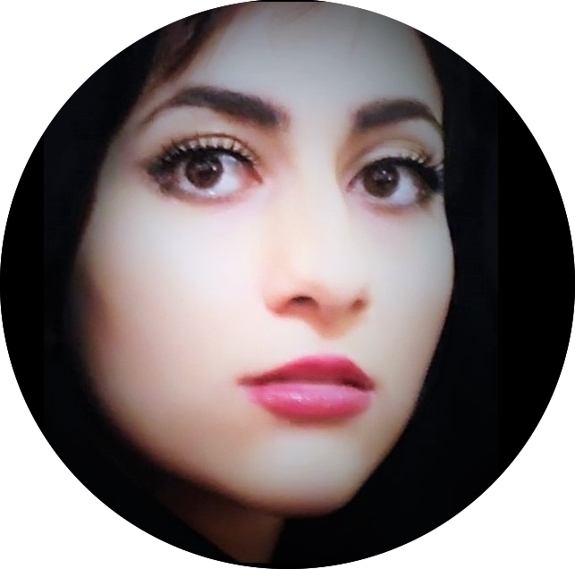
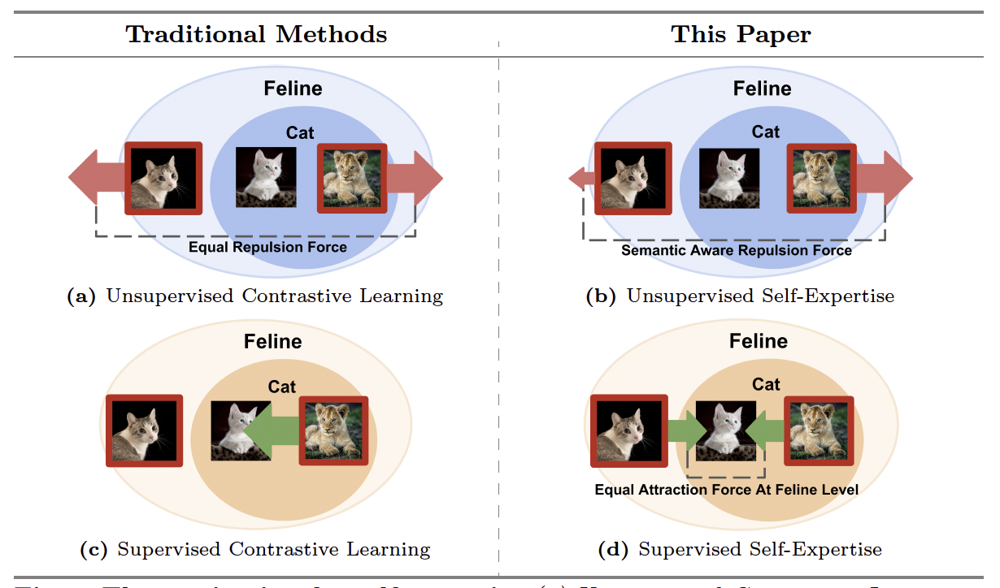
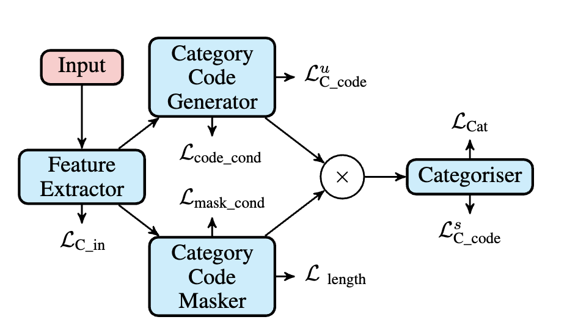
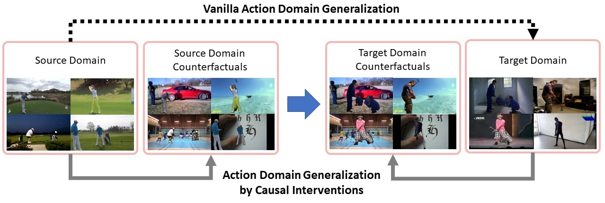
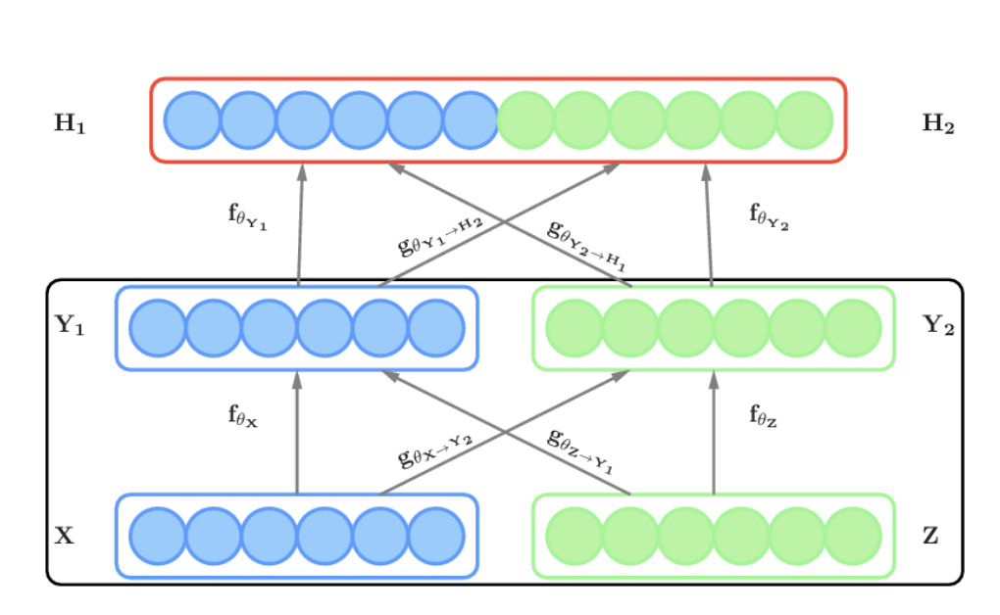
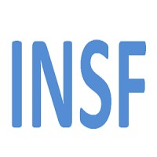

|
Sarah Rastegar
Hello, I am a Ph.D. candidate at the University of Amsterdam (UvA), privileged to be under the supervision of Prof. Cees Snoek.
Additionally, I am fortunate to receive insightful guidance from Prof. Yuki Asano.
Before embarking on my Ph.D., I pursued my Master's degree at Sharif University of Technology, Tehran, Iran, where I was honored to work under the supervision of Dr. Mahdieh Soleymani Baghshah.
My Master's thesis, titled Deep Learning for Multimodal Data, delved into the intricate layers of multimodal data through the lens of knowledge distillation. View my thesis (in Persian).
My research focuses on enabling machine learning models to exhibit robust generalization to unseen domains, particularly leveraging self-supervision. During my Master’s, I explored transferring knowledge between modalities through multimodal learning. My Ph.D. journey has navigated through utilizing causal inference and Fourier frequency filtering to facilitate domain generalization. Presently, my research is focused on developing a framework that empowers models to discern novel categories, predominantly through self-supervision.
Email /
Google Scholar /
Github /
Linkedin
|

|
|
News
| July 2024 |
SelEx: Self-Expertise in Fine-Grained Generalized Category Discovery got accepted to ECCV. |
| February 2024 |
Background No More: Action Recognition Across Domains by Causal Interventions got accepted to CVIU. |
| September 2023 |
Learn to categorize or categorize to learn? got accepted to NeurIPS. |
| July 2022 |
I attended the 12th Lisbon Machine Learning School (LxMLS) in Lisbon, Portugal. |
| September 2021 |
I became Soos Chair for VisLab weekly Soos meetings. |
| September 2021 |
I was a co-organizer for IPM fifth summer school ASOC2021. |
| November 2020 |
I started my Ph.D. in VisLab under supervision of Cees Snoek. |
|

|
SelEx: Self-Expertise in Fine-Grained Generalized Category Discovery
Sarah Rastegar, Mohammadreza Salehi, Yuki M Asano, Hazel Doughty, Cees G.M. Snoek
ECCV, 2024
[Arxiv]
[Code]
In this paper, we introduce a novel concept called self-expertise, which enhances the model's ability to recognize subtle differences and uncover unknown categories. Our approach combines unsupervised and supervised self-expertise strategies to refine the model's discernment and generalization. Our supervised technique differs from traditional methods by utilizing more abstract positive and negative samples, aiding in the formation of clusters that can generalize to novel categories. Meanwhile, our unsupervised strategy encourages the model to sharpen its category distinctions by considering within-category examples as `hard' negatives. Supported by theoretical insights, our empirical results showcase that our method outperforms existing state-of-the-art techniques in Generalized Category Discovery across several fine-grained datasets.
|
|

|
Learn to Categorize or Categorize to Learn? Self-Coding for Generalized Category Discovery
Sarah Rastegar, Hazel Doughty, Cees G.M. Snoek
NeurIPS, 2023
[Arxiv][Code]
What exactly delineates a category? In this paper, we conceptualize a category through the lens of optimization, viewing it as an optimal solution to a well-defined problem. Harnessing this unique conceptualization, we propose a novel, efficient and self-supervised method capable of discovering previously unknown categories at test time. A salient feature of our approach is the assignment of minimum length category codes to individual data instances, which encapsulates the implicit category hierarchy prevalent in real-world datasets
|
|

|
Background No More: Action Recognition Across Domains by Causal Interventions
Sarah Rastegar, Hazel Doughty, Cees G.M. Snoek
CVIU, 2024
[SSRN]
We aim to recognize actions under an appearance distribution-shift between a source training-domain
and target test-domain. To enable such video domain generalization, our key idea is to intervene on
the action to remove the confounding effect of the domain-background on the class label using causal
inference. Towards this, we propose to learn a causally debiased model on a source domain that in-
tervenes on the action through three possible Do-operators which separate the action and background.
To better align the source and target distributions we also introduce a test-time action intervention.
|
|

|
MDL-CW: A Multimodal Deep Learning Framework with Cross Weights
Sarah Rastegar, Mahdieh Soleymani Baghshah, Hamid R. Rabiee, Seyed Mohsen Shojaee
CVPR, 2016
[Code]
[Bibtex]
An ideal model for multimodal data
can reason about missing modalities using the available
ones, and usually provides more information when multiple
modalities are being considered. All the previous deep mod-
els contain separate modality-specific networks and find a
shared representation on top of those networks. Therefore,
they only consider high level interactions between modal-
ities to find a joint representation for them. In this paper,
we propose a multimodal deep learning framework (MDL-
CW) that exploits the cross weights between representation
of modalities, and try to gradually learn interactions of the
modalities in a deep network manner from low to high level
interactions.
|
|
Fall 2022 - Teaching Assistant for Deep Learning I, Prof. Yuki Asano.
Fall 2021 - Teaching Assistant for Deep Learning I, Prof. Xiantong Zhen.
Fall 2021 - Teaching Assistant for Computer Vision 2, Prof. Shaodi You.
|
|  |
Awarded Research grant by Iran National
Science Foundation (INSF), for fulfilling
undergoing research in the field of Deep
Learning |
|
Selected as a National Scientific Elite by the
Iranian National Elites Foundation, for the
outstanding academic success |
|
3rd Rank in M.Sc. artificial intelligence
graduates in sharif university of technology |
|
1st Rank among 1015 test takers in Nation-Wide Ph.D. Entrance Exam in Computer Engineering - Artificial Intelligence
1st Rank among 32,276 test takers in the Nation-Wide M.Sc. Entrance Exam in Artificial Intelligence
2nd Rank among 32,276 test takers in the Nation-Wide M.Sc. Entrance Exam in Computer Engineering
2nd Rank among 28,293 test takers in the Nation-Wide M.Sc. Entrance Exam in Information Technology Engineering, Computer Networks and Information Security
|
|
{kind=link}